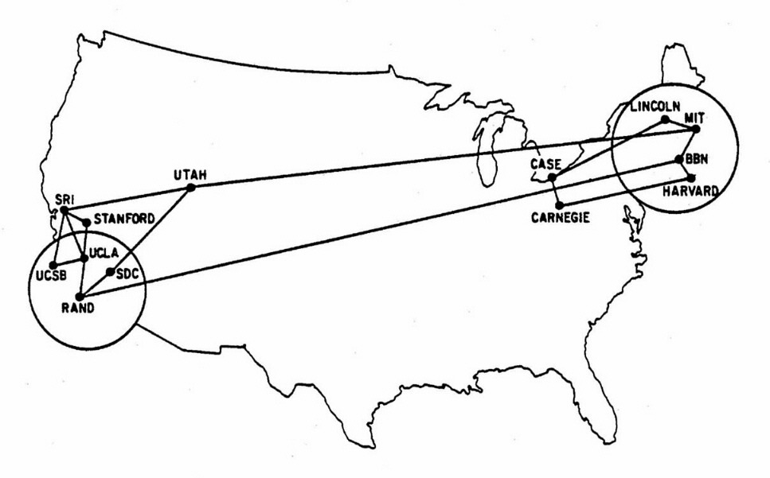

Réseau Libre
Réseau sans-fil communautaire | Infrastructure ouverte
reseaulibre.ca
@ReseauLibre @PeerProd @MathieuLutfy
Plan
- L'histoire de l'Internet en 5 minutes
- Motivations de Réseau libre
- Réseau maillé
- Gouvernance
- Défis


Courte histoire de l'Internet...
« routeur de paquets »
ARPANET 1970
http://www.vox.com/a/internet-maps
ARPANET 1973

http://www.vox.com/a/internet-maps
ARPANET 1982

http://www.vox.com/a/internet-maps
1983 : TCP/IP remplace NCP sur l'ARPANET

1984 : DNS
1991 : WWW

Mosaic 1 : 1993, Netscape 1 : 1995
NFSNET 1992
http://www.vox.com/a/internet-maps
Internet Society (ISOC) 1992
NFSNET 1993

http://www.vox.com/a/internet-maps
1994 : privatisation de NSFNET
- UUNet (Verizon/MCI), Sprint, AT&T, Level3
- NSFNET => Nanog
1995 : Culture populaire
1995 : https (SSL)

Motivations de réseau libre

Internet était conçu pour être décentralisé
- Allocation IP (IANA)
- BGP
- DNS
- SSL
- Tier-1
Dans notre jeune temps...
Dans notre jeune temps...
- modem téléphoniques et BBS
- choix de fournisseur d'accès à Internet
- Fidonet, Usenet
- Réseaux adhoc, copy-party
Hackers (1990) vs Hackers (2000-2010)
- Réactions démesurées
- Incompréhension et perception de perte de contrôle
Communauté du libre au Québec
- FACIL / Linux-Québec (1997)
- Ile sans fil (~ 2000)
- Foulab (2008)
- Un Québec Branché sur le monde (UQBM)
- Communautique
- Réseau libre (2012-02-15)
Un réseau maillé?
- independant ✔
- local ✔
- décentralisé ✔
- non-commercial ✔
Pourquoi ?
- Contrôle citoyen
- Services locaux
- Services d'urgences
- Sans censure
- Parce qu'on peut...
- ~30 noeuds
- ~20 bénévoles
- débuté en 2012
Politiques
- consensus
- propositions par courriels
- logiciels libres
5 libertés
- Free Network Foundation
- Participer
- Où les données sont stockées
- Avec qui partager
- Sans interférence
- Identité / anonymat
Picopeer agreement
- Transit libre
- Communication ouverte
- Aucune garantie
- Conditions d'utilisation
Comment ça marche ?
- réseaux sans fil "ad-hoc" 802.11n
- routage décentralisé avec Babel
- petites machines Ubiquity, TP-Link
- plein d'antennes sur les toits
IPv6 ?
- Adresses
- 128 bits séparés en 16 octets
- Octets groupés par 2
- Séparés par des ":"
- En hexadécimal
Source: http://www.flickr.com/photos/wrosgen/2614059100/

Concrètement?
Source: http://www.flickr.com/photos/ampm/3481540472/